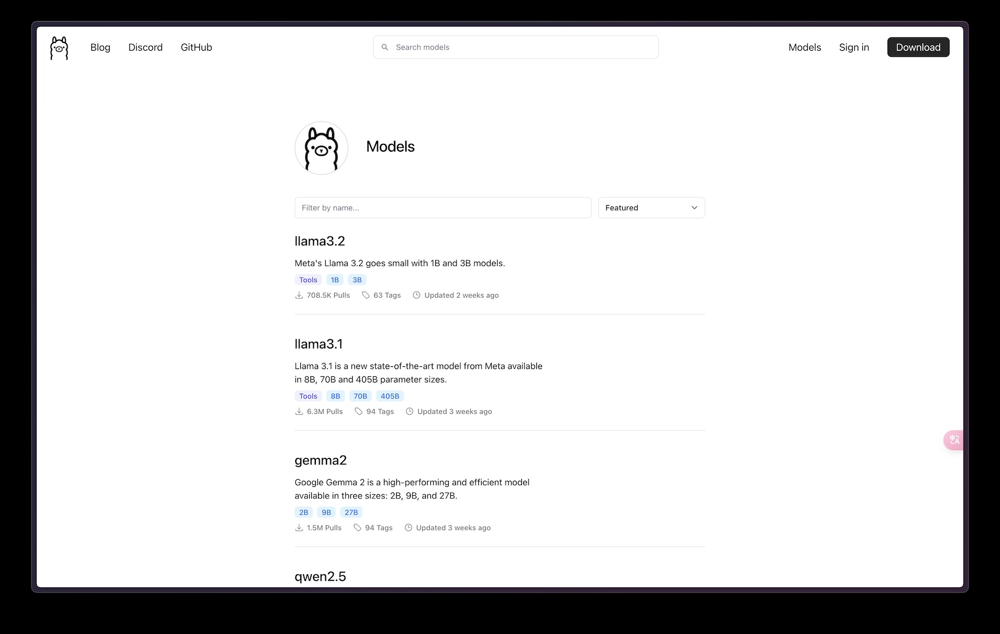
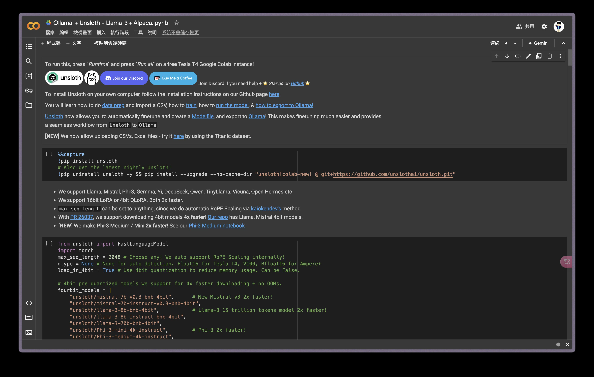
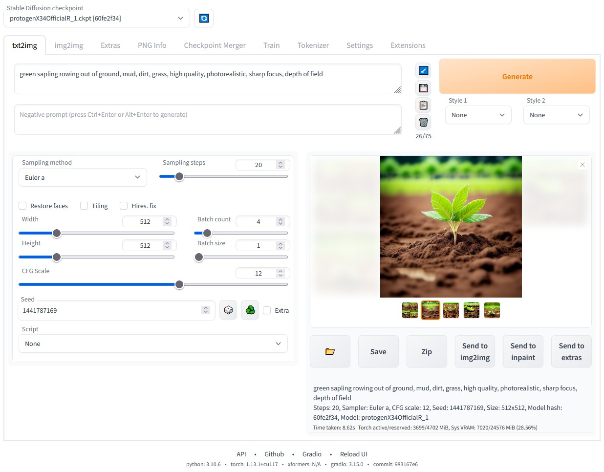
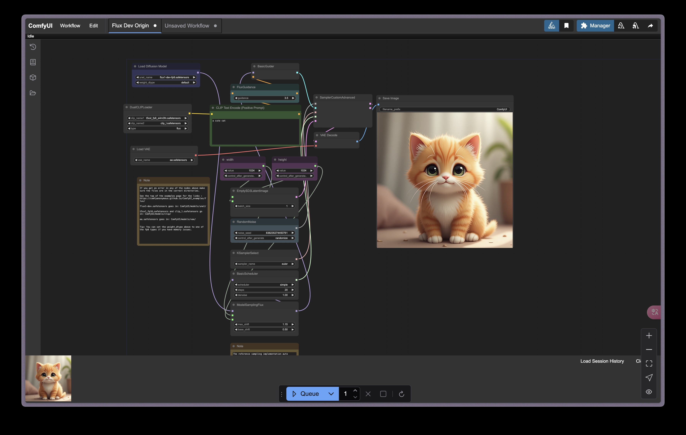
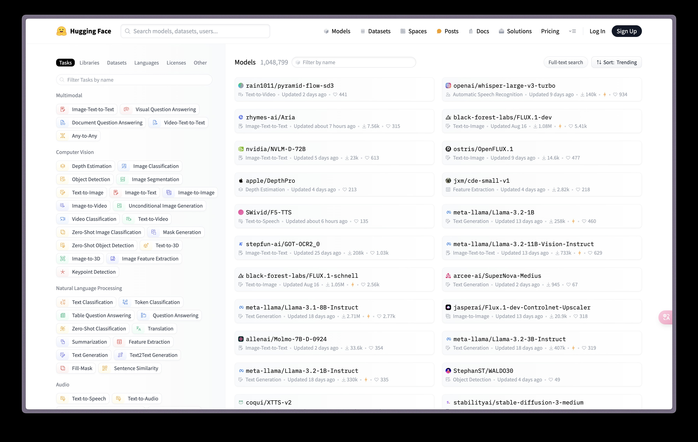

-

是一個能夠在本機跑語言模型的程式，官網上也提供了許多現在有名的開源模型，例如llama3.2等。
- Open WebUI
-

接下來要講到的是模型的一項技術：微調，微調可以讓模型在某一領域更專業，微調過程中非常需要依賴GPU的算力，
而unsloth就是一個可以減少微調過程中佔用GPU大小的程式，他也有提供google colab連線至雲端GPU來讓你微調。
- llama.cpp
-

這是ollama的前身，不過他也包含了轉換模型格式，量化模型等好用的功能。
-

這個專案跟上一個得差異在於這個專案的呈現方式是工作流，可以用模組化的方式呈現模型在算圖的時候流程是什麼，
因此靈活性也比較高，社群也有很多插件讓他支援更多種類的模型。
-

最後一個則是資源網站，這個網站上有非常非常多開源模型，並且不只模型，微調用的數據集也能在上面找到其他人事先製作好的，是個非常方便的網站。